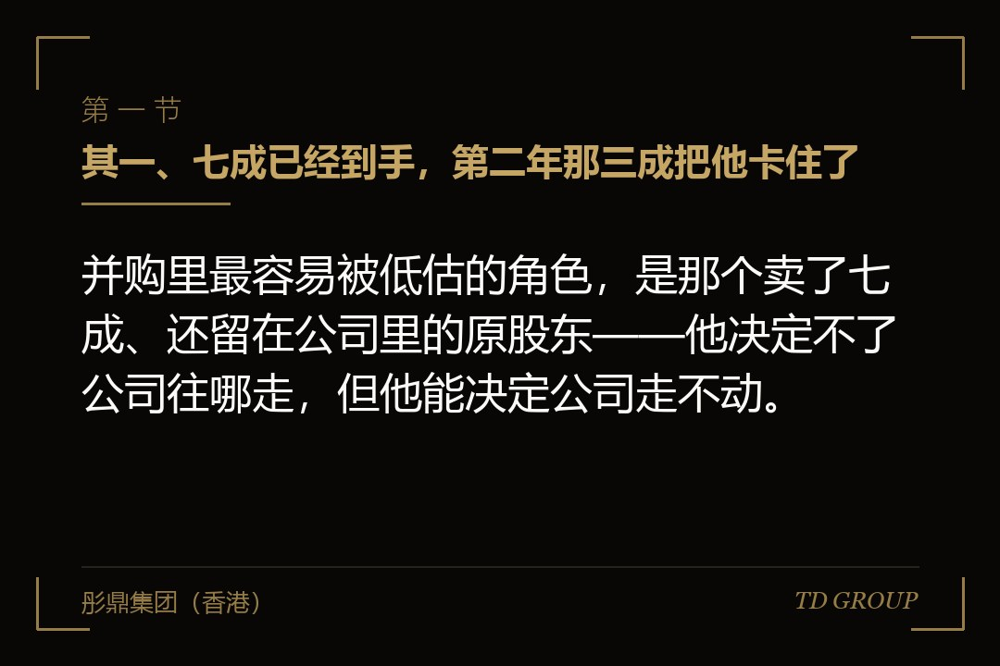
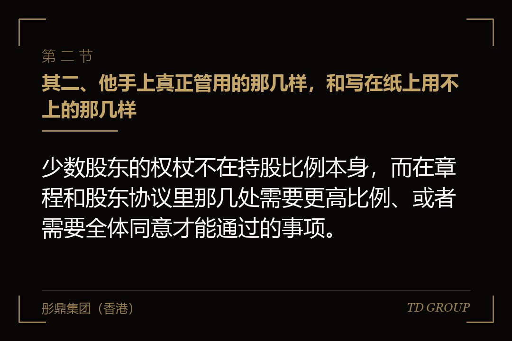
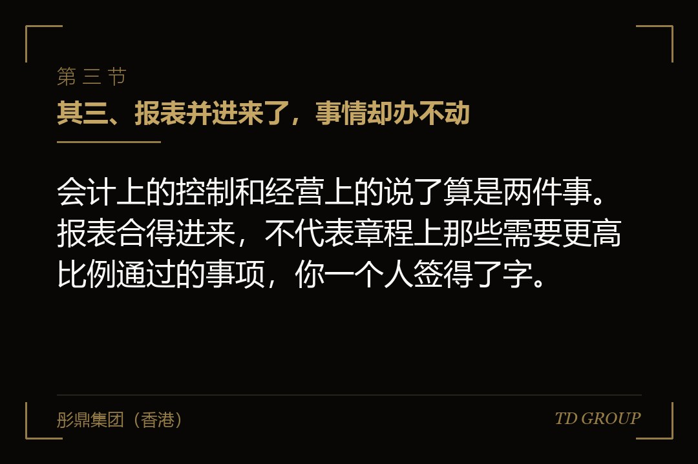

其一、七成已经到手，第二年那三成把他卡住了

结论先行：并购里最容易被低估的角色，是那个卖了七成、还留在公司里的原股东——他决定不了公司往哪走，但他能决定公司走不动。
假设有家上市公司两年前买下一家做精密模具的企业，拿下七成股权，剩下三成留在创始人手上，人也留下来继续当总经理。交割那天所有人都很高兴：报表当年就合了进来，公章、财务章、营业执照正本全部移交。
第二年，上市公司想把自己旗下另一块业务装进这家标的，做法是标的增加注册资本、上市公司以资产出资换取新增的股权。方案报到标的的股东会，创始人投了反对票。
按照公司法，增加注册资本要经代表三分之二以上表决权的股东通过。上市公司手上七成，看起来够用；但那份章程在交割时没动过，里面还留着上一轮融资时写进去的一条：增加或者减少注册资本，须经全体股东一致同意。
这条约定当年是为了保护小股东写的，现在保护的是那三成。上市公司的资产装不进去，这块业务的整合方案往后推了十一个月，期间还要在定期报告里解释进度，交易所也问过一次。
先把一件常被混在一起的事说清楚。本文讲的是并购交易里被收购方留下来的原股东，他手上的股权是没卖完的那一部分，对手方是买下他公司的那家上市公司。这跟融资轮里创始人与投资人之间的一票否决、董事席位、拖售权、优先购买与共同出售不是一回事：那边是投资人拿钱进来换保护，这边是原股东卖掉多数、留下少数继续经营，利益方向不同，融资轮那一套不在本文范围内。
其二、他手上真正管用的那几样，和写在纸上用不上的那几样

结论先行：少数股东的权杖不在持股比例本身，而在章程和股东协议里那几处需要更高比例、或者需要全体同意才能通过的事项。
头一样是表决门槛。修改章程、增加或者减少注册资本、合并分立、解散、变更公司形式，这几类事项在法律和章程里通常要求更高比例通过。持股三成的股东在这类事上不是配角，他是那道门槛的另一半。
第二样是章程可以另行约定的事项。有限责任公司的章程弹性很大，上一轮融资、上一次股东进出，都可能往里加过"须经全体股东一致同意"这类条款，而它不会因为控股股东换了人就自动失效。
第三样是董事提名。三成股权能不能提名董事、提几个、董事会怎么表决、有没有一票否决式的特别事项，这些都写在股东协议里。席位本身不值钱，值钱的是哪些事必须过董事会。
第四样是知情权。查阅财务会计报告和会计账簿，是股东的法定权利。对买方来说这不只是麻烦：标的的经营数据要往上并进合并报表，而少数股东有权反过来看这些数据，两边口径要对得上。
第五样是对外转让时的优先购买权，以及增资时按原比例出资的权利。前者管的是买方以后想把这块资产卖掉的时候，后者管的是买方想靠增资把他稀释下去的时候，两条一起把"挤出去"这条路堵掉了大半。
纸上的那几样也要认清。写着"重大事项由双方协商一致"却不列明哪些算重大、协商不成怎么办的，等于给了对方一个没有期限的暂停键；写了知情权却不约定报送周期和口径的，拿到手的多半是一叠没用的文件；席位有了、董事会却常年走书面决议的，席位是空的。
其三、报表并进来了，事情却办不动

结论先行：会计上的控制和经营上的说了算是两件事。报表合得进来，不代表章程上那些需要更高比例通过的事项，你一个人签得了字。
买方最容易高估的，是"七成"这两个字。它决定了日常经营谁说了算、决定了报表往哪边合，但决定不了那些被章程单独拎出来的事项。而并购之后要办的事，恰恰大部分都在那一类里。
清单其实不长：改章程、增资减资、对外担保、处置核心资产、变更主营业务、利润分配方案、聘任或者解聘财务负责人。上市公司做完一笔并购，两三年内基本上每一条都要碰一遍。
还有一条更隐蔽：披露。上市公司有法定的信息披露义务，定期报告、业绩预告、重大事项公告，每一样都要标的按时提供数据、配合审计和内控评价。这些配合义务没写进交易文件，就只能靠人情维系。
再假设一家做环保设备的标的。上市公司持股七成，年报审计进场时，标的的财务负责人还是原股东的人，底稿要的一批关联方流水迟迟拿不出来。审计意见拖到披露截止前几天才出，上市公司只能在公告里说明原因。
这类事故有个共同点：它们不构成违约。对方没做任何交易文件禁止他做的事，他只是没做交易文件没要求他做的事。
其四、剩下那三成，什么时候买、按什么价买，要在头一天写死
结论先行：分步收购最贵的错误，是把剩余股权的价格留到几年之后再谈——那时候标的经营得好，他不肯卖；经营得差，他偏要你买。
很多交易签的时候留了一句话："双方同意在未来适当时机就剩余股权的收购另行协商"。这句读起来是善意，实际上是把定价权交给了当时谈判力更强的那一方，而那一方是谁，取决于三年后的业绩。
能落地的写法有三样要素。头一样是触发条件：到期就买，还是达到某个经营指标才买，还是任何一方提出就启动。第二样是定价机制：固定金额、按届时经营数据乘一个事先约定的倍数、还是双方各自委托评估之后取某种结果。第三样是付款与过户安排。
两个方向的权利要成对出现。买方希望有权在约定条件下买走剩下那三成，原股东同样需要有权把它卖回来。只给买方一个方向，原股东就没有退出通道，他会用手上那些表决权把这个缺口补回来，补的地方通常是分红和日常配合。
定价一旦挂在届时的经营数据上，还得防一手：数据是在买方控制之下产生的。所以口径要写死——用哪张报表、扣不扣非经常性损益、关联交易怎么剔除、会计政策变了怎么调整。这些不写，公式再漂亮也是第二轮争议。
这类安排在会计上怎么反映，取决于条款的具体写法：无条件的购买义务和附条件的权利，落到报表上不是一回事。签之前跟会计师把口径确认下来，比签完再回头调整省事得多。具体以会计准则与交易文件原文为准。
其五、他既是股东，又是你的供应商
结论先行：留下来的原股东手上往往还有别的公司，那些公司跟标的既可能是同一门生意，也可能正在给标的供货，两件事都要在交割之前摆平。
同业竞争先说。原股东名下另有一家做类似产品的企业，标的接不下的单子、利润薄的单子，很自然会流到那边去。对上市公司来说这不只是生意流失，它是要在公开文件里解释清楚的问题。
常见的处理有几种：把那家企业一并收进来、让原股东在约定期限内关掉或者转让、签竞业限制并约定违约后果、或者把业务边界按客户类型和地域划清楚。哪一种可行，取决于那家企业的体量和跟标的的重合度。同业竞争的整改路径不在本文展开。
关联交易更常见，也更难一刀切。原股东的另一家公司是标的的原材料供应商，合作了十年，价格和账期都是当年谈的。交割之后这条线不能说断就断，真断了，标的的供应链当年就出问题。
能做的是把它管起来：定价参照可比市场价格并留下比价记录、年度交易金额设上限、大额单笔交易走董事会或者股东会、原股东在表决时回避、每期在报告里单独列示。关联交易清理的具体做法不在本文展开。
这里有一个容易被忽略的时点问题。交割之前，那些交易是标的自己的事；交割之后，它们变成上市公司的关联交易，要按上市公司的口径识别、审议和披露。标准变了，业务一点没变——所以清单要在交割前列出来，不是等编年报时才发现。
其六、他要分红，你要把利润留在里面
结论先行：少数股东的回报只有两条路，分红，和最终退出时那笔钱。买方要把利润留下来继续投的时候，这两条路就跟你的现金安排正面撞上。
位置不同，诉求就不同。上市公司买下标的是为了让它长大，长大要花钱，利润更愿意留在公司里做产能、做研发、做渠道。原股东手上只剩三成，公司长大他也只分到三成，而他的现金需求可能就在眼前。
没有事先约定的话，这件事每年都要吵一次。利润分配方案要经股东会审议，而这恰恰是少数股东那一票有位置的事项。于是分红变成了筹码，他会用其他事项上的配合来换这一项上的让步。
再假设一家做食品包装的标的。交割时没写分红政策，第二年上市公司提出利润全部留存扩产。原股东没在分配方案上投反对票，却在同一次股东会上对一笔对外担保投了弃权，担保没能通过。第三年各让一步：分掉四成利润，担保当场过。
提前处理的办法有几种。一种是把分红政策写死：可分配利润的某个比例，或者跟资本开支计划挂钩，年度经营计划批下来之后自动执行。另一种是用后续收购的定价来对冲：不分红的年份，那部分留存利润在算收购价时按约定方式补回去。
还有一种更干脆：把他的现金需求前置到交易本身。首付比例提高一点，把它从分红这件事上剥离出去。代价是买方前期现金压力大，好处是往后几年少一处争议。
哪一种都比不写好。不写的后果不是省事，是把一件本来算得清楚的事变成每年一次的谈判，而谈判桌上另一半筹码，是那些跟分红毫无关系的经营事项。
其七、谈崩了怎么办：打官司通常不解决问题
结论先行：僵局真正的代价不在于谁对谁错，而在于公司停在原地的那几个月甚至几年——打官司能确认一项权利，却确认不回已经错过的那个窗口。
僵局的形状通常很朴素：一份需要更高比例通过的决议，他不投赞成票；一次需要他签字的工商变更，他不签；一份审计要的资料，他那边一直在准备。没有一样构成明显的违约，事情就是办不了。
这时候能用的抓手，取决于当初有没有写。章程里可以约定僵局的解法：一方报价、另一方选择按这个价买下或者卖出；或者在董事会层面给董事长一票决定权。这些条款平时看着多余，用到时就是全部。
打官司为什么通常不解决问题，原因有三个。头一个是慢，一审二审加上执行，一两年是常态，而整合的窗口没有那么长。第二个是判决往往只解决一个争点，比如确认某次股东会决议无效，但公司下一步怎么走，判决不管。
第三个是它自己会变成一件要披露的事。上市公司跟自己买来的标的的原股东打官司，这件事本身就要写进公告，交易所也可能问一句：当初的整合方案是怎么安排的、现在影响有多大。这是场外成本，而且是长期的。
现实的做法是把出口留在前面。什么条件下他可以要求买方把剩下那三成买走、什么条件下买方可以要求他卖、价格怎么算、多久付清，写清楚了，僵局出现时就有一条不用打官司的路。
其八、买之前该谈定的，和留下来的那个人该守住的
结论先行：这类交易的结局，交割之前基本就定了——章程改没改到位、剩余股权的价格锁没锁死、董事会和财务口子谁管，这几件事在签约那天就写好了答案。
买方要做的头一件，是把交割之后两三年内要办的事逐项列出来，拿着章程和股东协议一条条对：这件事要多高比例通过、三成那一票在不在场、他不同意会怎样。列不出这张表，就是还没想清楚买下来要干什么。
第二件是章程在交割前就改到位。等交割完了再去改，改章程本身又是一件要更高比例通过的事，那时你已经没有筹码了。这个顺序错了，后面所有的安排都要重谈一遍。
第三件是把剩余股权的时点和定价当场锁死，而且两个方向的权利要成对写。只给买方买的权利，等于把原股东的退出通道堵住，他一定会从别的地方找回来。
剩下的几件事是同一个问题的不同侧面：董事会怎么组、财务负责人由谁委派、审计什么时候进场、关联交易的边界在哪、分红按什么规则来、谈不拢时走哪条路。这些不是条款的堆砌，是在回答一句话——这家公司往后三年由谁说了算，说了不算的那个人怎么办。
换到留下来的那个人这边，要守住的东西不多，但每一样都不能少。头一样是退出通道：什么条件下你有权把剩下那三成卖给买方、按什么价、多长时间内付清。没有这一条，你手上的股权就是一张不知道什么时候能兑现的纸。
第二样是知情权要落到具体机制上，每月还是每季、报什么、什么格式、谁来送。写一句"享有知情权"没有用，真到要用的时候，你会发现连该找谁要都不知道。
第三样是别接受"重大事项需双方一致同意"却不写僵局解法的条款。它表面上是给你的保护，实际上是给双方各发了一个暂停键，而暂停对持股多的那一方损失更大，他一定会想办法绕过去，方式通常不好看。
第四样是竞业限制的范围和期限要谈清楚。你手上还有别的生意，哪些能继续做、哪些要停、停多久、违约怎么算，不写清楚，往后每一次正常的业务动作都可能被指为违约。
我们跟华尔街俱乐部有合作，这类交易的案子见得多一些，出问题的那些回头看，症结几乎都不在交割之后的执行，而在签约那天章程没有改。
最后留一个问题。开头那家精密模具企业，创始人卖了七成、留了三成、人还坐在总经理位子上——换你是他，坐下来谈的时候，你会先要那个董事席位，还是先把剩下三成的收购价格锁死？